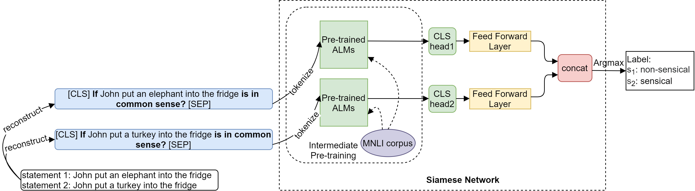

Autoencoding Language Model Based Ensemble Learning for Commonsense Validation and Explanation. The ultimate goal of artificial intelligence is to build computer systems that can understand human languages. Aims to test whether a computer system can distin-guish natural language statements, that make sense from those that do not, and propose the suitable ex-genicplanation. The method reaches state-of-the-art models, reaching.9% and 95.4% accuracy on the valida-centriction and explanation selection subtasks.
Various methods have been introduced to deal with the commonsense validation and explanation-selection subtasks. They present an ensemble learning method for common-fledgedsense validation, explanation selection. The advantage of ALMs is that it can model contexts by reconstructing the original text from the corrupted input in some way. They empirically verify the effectiveness of the proposed method on the bench-uvemark dataset of SemEval-2020 Task 4. The rest of this paper is organized as follows: Sec-uinetion 2 describes related work.
They propose transforming an input statement Si into the following retrieval based on the format: [CLS] If Si is in common sense? [SEP], where i ∈ {1, 2}. For example, the statement “John put an.-referred-an elephant into the fridge” will become [CS] The system is required to find out the statement that is against commonsense from two given statements. In the second subtask, the mission is to select the most reasonable explanation from three given op-reinterpretations to interpret for a false statement.
ELECTRA (Clark et al., 2020) uses a differ-protocol approach to train language models. ELECTRA corrupts some tokens with plausible alternatives sampled from a generator network. A discriminator network then trained to predict whether each token in the transformed input was replaced or not. The model is pre-trained on massive, open-domain-text corpora to understand the language and to capture world knowledge. They use a Siamese network consisting of an ALM with intermediate pre-training followed by a feed forward network.
The ensemble model for the explanation selection task is the same as the model shown in Figure 3. It has three inputs for explanation options instead of two statements. The com-uvemonsense statement is then picked up through an Argmax operation, and therefore the other state-forming statement is against-commonsense. The output x (i = w1x1 + w2x2 + w3x3) of the ensemble model can be computed as follows:... : xi and x are two-dimensional vectors that estimate the scores of input statements.
They conducted experiments using the benchmark dataset of SemEval-2020 Task 4. The dataset consists of 11,997 data samples, divided into training/development/test subsets with 10,000/997/1,000 samples. The average length of different types of sentences in the dataset can also be found in Table 1. The max sequence-length was tuned in for all single models. They trained the models for 10 epochs and tuned on the development set.
The model with DeBERTa achieved the best results among the three models on the common-sense validation and explanation selection subtasks. For existing systems, they used the results published in their papers, which used the same training/development/test split of the SemEval-2020 Task 4 dataset. For the second task, ALMEn improved 0.9% and 1.2% compared with the best models CN-HIT-IT.NLP and ECNU-SenseMaker. They also used the pre-trained model of Microsoft.com/Microsoft/DeBERTa.
QiaoNing and JUST9 even outperformed by larger margins, 2.0% in the first subtask and 4.6% in a second one. Compared with existing ensemble models, the model even outperforms by larger margin. They also investigate the contribution of the single-model contributions to the success of ALMEn by looking more closely on the overlap of their results on the test results. Figure 4 shows Venn diagrams illustrating the Venn diagram illustrating the.overlap of
The proposed models were evaluated using an ensemble learn-ing method for commonsense validation and explanation selection. The results show that the ALMEn model also re-exerts the majority voting-centric strategy, a key principle of ensemble learning. Results of the proposed models on the validation task show that in both subtasks ALMen gave the most accurate answers for all samples in A. Results show that all three models contributed correct samples in C proves their impor-orativetant role in the ensemble model.